Pakolliset tehtävät on merkitty harmalla taustavärillä. Punaisella taustavärillä merkatut ovat kontrollitehtäviä, jotka näytetään ohjaajalle harjoitustilaisuudessa!
HUOM: nimeä tiedostot otsikossa olevan sanan mukaan
Toteutetaan oma luokka käyttäjän syötteen lukemiseen. Luokka toimii luokkakirjastona, eli määrittele kaikki metodit staattisiksi. Metodit eivät myöskään saa heittää poikkeuksia, eli käsittele poikkeukset metodien sisällä!
Käytä scannerin nextLine()-metodia
Toteuta luokalle metodi lueLuku(), joka pyytää käyttäjältä numeroa. Metodi ottaa parametrikseen käyttäjälle näytettävän kysymyksen. Jos käyttäjä syöttää arvon, joka ei ole numero, esitetään kysymys uudestaan kunnes käyttäjä syöttää numeron.
int luku = MunLukija.lueLuku("Syötä luku: ");
System.out.println("Käyttäjä syötti luvun " + luku);
Syötä luku: mikä? Syötä luku: kissa Syötä luku: 4 Käyttäjä syötti luvun 4
Toteuta luokalle metodi lueSyote(), joka palauttaa merkkijonon. Metodi saa parametrikseen käyttäjälle näytettävän kysymyksen, sekä boolean-arvon, jolla määritellään saako syöte olla tyhjä.
String nimi = MunLukija.lueSyote("Anna nimesi: ", false);
System.out.println("Käyttäjä syötti nimen " + nimi);
System.out.println();
String komento = MunLukija.lueSyote("Syötä komento, tyhjä lopettaa: ", true);
if("".equals(komento)) {
System.out.println("Lopetetaan...");
} else {
System.out.println("Käyttäjä syötti komennon " + komento);
}
Anna nimesi: Anna nimesi: Matti Käyttäjä syötti nimen Matti Syötä komento, tyhjä lopettaa: Lopetetaan...
Kuormita metodia lueLuku(), luomalla toinen metodi lueLuku(). Uusi lueLuku() saa parametrikseen merkkijonon ja kaksi kokonaislukua. Merkkijono on kysymys, mikä kysytään käyttäjältä. Numerot määrittelevät arvovälin, millä luetun numeron täytyy olla.
int luku = MunLukija.lueLuku("Syötä luku väliltä 1 ja 4: ", 1, 4);
System.out.println("Käyttäjä syötti luvun " + luku);
Syötä luku väliltä 1 ja 4: mikä? Syötä luku väliltä 1 ja 4: kissa Syötä luku väliltä 1 ja 4: 5 Syötä luku väliltä 1 ja 4: 0 Syötä luku väliltä 1 ja 4: 4 Käyttäjä syötti luvun 4
Tehtävässä käytetään pakkausnäkyvyyttä, eli luo projekti "Ilmo" ja aikaisemmasta poiketen älä laita projektin "Create main class" -kenttään nimeä ilmo, vaan jätä ehdotus ilmo.Main.
Selaile tehtävä ensin loppuun asti, niin saat paremman kuvan tehtävän osista.
Projektin luokat ovat tehtävän lopussa seuraavat:
HUOM: käytä tehtävässä MunLukija-luokkaa.
Luokka luodaan automaattisesti projektin alussa. Ohjelman käyttäytymistä ohjataan tästä luokasta.
Laita seuraavat kommentit luokkaan, toiminnot lisätään kommenttien osoittamassa järjestyksessä.
package ilmo;
public class Main {
public static void main(String[] args) throws IOException {
// TODO: Olioiden luonti
// TODO: kayttajien lisäys
// TODO: kurssien lisäys
// TODO: kirjautuminen
// TODO: päävalikko
}
}
Toteuta luokka Ilmo. Luo pääohjelmassa ilmentymä ilmo luokasta.
Toteuta luokka Tekstikayttoliittyma. Tekstikäyttöliittymä saa konstruktorin parametrinaan ilmentymän luokasta Ilmo. Luo pääohjelmassa ilmentymä luokasta nimellä tk.
Toteuta luokka Kayttajatietokanta. Luo pääohjelmassa ilmentymä kayttajat.
Käyttäjätietokanta tallentaa käyttäjien käyttäjätunnuksia ja salasanoja. HashMap<String, String> soveltunee loistavasti näiden tallentamiseen.
Lisää käyttäjiä tietokantaan seuraavasti:
// TODO: kayttajien lisäys
kayttajat.lisaaKayttaja("matti", "m");
kayttajat.lisaaKayttaja("arto", "a");
Käyttäjätietokanta tarjoaa metodin boolean kirjaudu(String nimi, String salasana).
Toteuta kirjautuminen järjestelmään. Tekstikäyttöliittmä tarjoaa metodin, joka kysyy käyttäjältä käyttäjänimen ja salasanan. Tiedot palautetaan taulukossa. Taulukon tiedot annetaan käyttäjätietokannan metodille kirjaudu, joka palauttaa vertailee tietoja talletettuun ja palauttaa boolean arvon. Jos kirjautuminen onnistuu, talletetaan ilmoon tieto nykyisestä käyttäjästä (käyttäjät ovat siis vain Stringejä).
Komento break poistuu loopista.
// TODO: kirjautuminen
while (true) {
String[] kirjautuminen = tk.sisaankirjautuminen();
if (kayttajat.kirjaudu(kirjautuminen[0], kirjautuminen[1])) {
ilmo.kayttajaKirjautui(kirjautuminen[0]);
break;
}
}
Tulostus kirjautumisesta on seuraava:
Ilmojärjestelmä
-----------------------------------------------
Kirjaudu sisään
nimi: arto
salasana: eioikein
Ilmojärjestelmä
-----------------------------------------------
Kirjaudu sisään
nimi: arto
salasana: a
Päävalikko on ikuinen silmukka, jossa tekstikäyttöliittymä näyttää valikon ja lukee käyttäjän valinnan. Tämän jälkeen toimitaan valinnan mukaisesti.
Kuten tähänkin asti, toteutetaan ominaisuudet yksi kerrallaan. Toteutetaan aluksi poistuminen ohjelmasta (tärkein!)
// TODO: päävalikko
while (true) {
int valinta = tk.paavalikko();
if (valinta == 0) {
break;
}
}
Tuloste näyttää seuraavalta:
Ilmojärjestelmä ----------------------------------------------- Nykyinen käyttäjä: arto Päävalikko 1. Listaa kurssit 2. Ilmoittaudu kurssille 3. Omat ilmoittautumiset 4. Näytä kurssien osallistujat 0. Poistu Valitse: 0
Ilmojärjestelmä ----------------------------------------------- Nykyinen käyttäjä: arto Päävalikko 1. Listaa kurssit 2. Ilmoittaudu kurssille 3. Omat ilmoittautumiset 4. Näytä kurssien osallistujat 0. Poistu Valitse: 1 Ilmojärjestelmä ----------------------------------------------- 1. Ohjelmoinnin perusteet 2. Ohjelmoinnin jatkokurssi Paina enter jatkaaksesi Ilmojärjestelmä ----------------------------------------------- Nykyinen käyttäjä: arto Päävalikko 1. Listaa kurssit 2. Ilmoittaudu kurssille 3. Omat ilmoittautumiset 4. Näytä kurssien osallistujat 0. Poistu Valitse:
Koska kurssit ovat järjestetyssä listassa, saamme numeroinnin kätevästi suoraan järjestyksestä!
Valinta päävalikkoon tehdään seuraavasti:
if (valinta == 1) {
tk.listaaKurssit();
tk.odotaEnter();
}
Jotta kursseja olisi listattavana, täytyy toteuttaa myös luokka Kurssi.
Toteuta luokka ja lisää kurssit ilmon kautta, sillä ilmon tulee tietää kaikki kurssinsa. Kurssilla on kaksi kenttää: nimi ja maksimiosallistujamäärä. Lisää kurssit pääohjelman alkuun. Ilmoon kannattanee toteuttaa ArrayList<Kurssi>, jotta kursseja voidaan lisätä/listata/poistaa/jne helposti.
// TODO: kurssien lisäys
ilmo.lisaaKurssi("Ohjelmoinnin perusteet", 2);
ilmo.lisaaKurssi("Ohjelmoinnin jatkokurssi", 3);
Ilmoittautuminen toimii seuraavasti:
Ilmojärjestelmä ----------------------------------------------- Nykyinen käyttäjä: arto Päävalikko 1. Listaa kurssit 2. Ilmoittaudu kurssille 3. Omat ilmoittautumiset 4. Näytä kurssien osallistujat 0. Poistu Valitse: 2 Ilmojärjestelmä ----------------------------------------------- 1. Ohjelmoinnin perusteet 2. Ohjelmoinnin jatkokurssi Valitse kurssi, jolle ilmoittaudut: 2 Ilmojärjestelmä ----------------------------------------------- Nykyinen käyttäjä: arto Päävalikko 1. Listaa kurssit 2. Ilmoittaudu kurssille 3. Omat ilmoittautumiset 4. Näytä kurssien osallistujat 0. Poistu Valitse:
Eli valinnan jälkeen palataan takaisin päävalikkoon.
Toteuta päävalikkoon ilmoittautuminen seuraavasti:
if (valinta == 2) {
tk.listaaKurssit();
int kurssinnumero = tk.ilmoittauduKurssille();
ilmo.ilmoittaudu(kurssinnumero);
}
Ilmo ohjaa ilmoittautumisen oikealle kurssille. Toteuta ilmoittauminen siis siten, että ilmo hakee listasta kurssin numeron perusteella oikean kurssin ja kutsuu kurssin metodia ilmoittaudu(String käyttäjänimi).
Toteuta käyttäjän kurssien listaus.
Ilmojärjestelmä ----------------------------------------------- Nykyinen käyttäjä: arto Päävalikko 1. Listaa kurssit 2. Ilmoittaudu kurssille 3. Omat ilmoittautumiset 4. Näytä kurssien osallistujat 0. Poistu Valitse: 2 Ilmojärjestelmä ----------------------------------------------- 1. Ohjelmoinnin perusteet 2. Ohjelmoinnin jatkokurssi Valitse kurssi, jolle ilmoittaudut: 1 Ilmojärjestelmä ----------------------------------------------- Nykyinen käyttäjä: arto Päävalikko 1. Listaa kurssit 2. Ilmoittaudu kurssille 3. Omat ilmoittautumiset 4. Näytä kurssien osallistujat 0. Poistu Valitse: 3 Ilmojärjestelmä ----------------------------------------------- Käyttäjän arto kurssit Ohjelmoinnin perusteet Paina enter jatkaaksesi
Toteuta päävalikon valinta seuraavasti:
if (valinta == 3) {
tk.kayttajanKurssit();
tk.odotaEnter();
}
Koska Tekstikäyttöliittymä tietää ilmon ja ilmo puolestaan tietää nykyisen kirjautuneen käyttäjän ja kurssit, voidaan käydä kurssit ja niiden ilmoittautuneet läpi.
Toteuta listaus, joka toimii kuten edellinen, mutta ei katso kuka on osallistuja on kyseessä.
Pääohjelmassa toteutus on seuraava:
if (valinta == 4) {
tk.listaaOsallistujat();
tk.odotaEnter();
}
Lisää ohjelman poistumiseen metodikutsu ilmo.talleta(), joka tallettaa kaikkien kurssien tämänhetkiset osallistujat.
Toteuta toiminnallisuus niin, että ilmo kutsuu kurssin metodia talleta(), joka luo kurssin nimisen tiedoston, johon talletetaan vain osallistujat (new File(this.nimi));. Tiedostossa jokaisella rivillä on yksi osallistuja.
Lisää ilmon metodiin lisaaKurssi(String nimi, int koko) toiminto, jossa kurssi-ilmentymä luodaan ja ilmentymän osallistujat ladataan edellä talletetusta tiedostosta.
Lisätään ohjelmaan vähän tarkistuksia.
Eräs deodoranttiyritys lähestyi Matteja jokunen vuosi sitten ehdottaen eräänlaisen laskurin toteuttamista. Laskurin ideana oli kasvattaa numeroa aina yhdellä siten, että luvussa 9999 palataan nollaan.
Deodoranttiyritykselle tehtiin kaksi erilaista käyttöliittymää, tekstipohjainen käyttöliittymä ja graafinen käyttöliittymä. Itse ohjelmalogiikka on kummassakin sama. Luo tehtävä projektiin clickeffect, ja jätä pääohjelman nimeksi ehdotus clickeffect.Main
// pakkaus ja importit
public class Main {
private static final Scanner scanner = new Scanner(System.in);
public static void main(String[] args) {
Laskuri aLaskuri = // TODO: Laskuri-rajapinnan toteuttava luokka
System.out.println("Käyttöliittymät: ");
System.out.println("1: teksti");
System.out.println("2: graafinen");
int valinta = MunLukija.lueLuku("Anna valinta: ", 1, 2);
if (valinta == 1) {
// TODO: tekstikäyttöliittymä
} else if (valinta == 2) {
// TODO: graafinen käyttöliittymä
}
}
}
Laskurille suunniteltiin tutun näköinen rajapinta. Toteuta luokka joka toteuttaa rajapinnan Laskuri. Valitse itse luokalle sopiva nimi. Määrittele luokalle myös sopiva toString()-metodi!
package clickeffect;
public interface Laskuri {
public int getArvo();
public void kasvataArvoa();
}
Tekstikäyttöliittymä saa konstruktorin parametrina Laskuri-rajapinnan toteuttavan olion. Tekstikäyttöliittymällä on metodi suorita(), joka käynnistää tekstikäyttöliittymän suorituksen. Kun Tekstikäyttöliittymä on luotu, ja metodia suorita() kutsutaan, saadaan seuraavanlainen tulostus.
Toteutetun luokan toString()-metodin palauttama tuloste, esimerkiksi "[ 0 ]" Paina enter, muut lopettaa: Toteutetun luokan toString()-metodin palauttama tuloste, esimerkiksi "[ 1 ]" Paina enter, muut lopettaa: Toteutetun luokan toString()-metodin palauttama tuloste, esimerkiksi "[ 2 ]" Paina enter, muut lopettaa: Moi!
Luo tekstikäyttöliittymä ja lisää se Main-luokkaan.
Luo luokka GraafinenKayttoliittyma, joka perii luokan JDialog. Luokka GraafinenKayttoliittyma saa konstruktorin parametrina Laskuri-rajapinnan toteuttavan luokan. Lisää Graafisen käyttöliittymän konstruktorikutsu pääohjelmaan.
Aseta myös seuraavat neljä metodikutsua käyttöliittymän konstruktorin loppuun.
setSize(300, 200); // asetetaan ikkunan koko setDefaultCloseOperation(WindowConstants.DISPOSE_ON_CLOSE); // jos ikkuna suljetaan, tuhoa ikkuna pack(); // jos ikkunassa on komponentteja, mukauta ikkunan koko niihin setVisible(true); // aseta ikkuna näkyväksi
Ikkunan pitäisi olla tyhjä ja näyttää (ainakin hieman) seuraavanlaiselta.
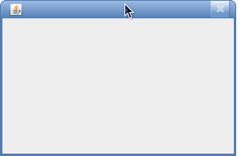
Lisää ikkunaan tekstielementti. Luokka JLabel on tekstielementti, minkä voi lisätä käyttöliittymään. Saat Dialog-luokalta paneelin mihin voi lisätä komponentteja (esimerkiksi JLabel!) metodikutsulla getContentPane(). Aseta luokalle JLabel arvoksi laskurin toString()-metodin palauttama arvo. Alla olevassa kuvassa palautus on "[ 0 ]". Ikkunan pitäisi nyt näyttää hieman seuraavanlaiselta.
Voit venyttää ikkunaa kulmasta (kuten normaaleja ikkunoitakin), tarvitset tätä ikkunan sulkemiseen.
Lisätään ikkunaan nappi. Luokka JButton käy hyvin napista. Ei vielä toteuteta tapahtumankuuntelijaa napille, tärkeintä on saada se käyttöliittymään. Huomaa, että yrittäessäsi asettaa nappia getContentPane()-kutsulla saatuun paneeliin, joudut määrittelemään napille lisäksi sijainnin. Esimerkiksi add(nappi, BorderLayout.SOUTH). Ikkunan ulkoasun pitäisi nyt olla seuraavankaltainen.
Yllä olevassa kuvassa napin tekstiksi on määritelty Click.
Javan valmis rajapinta ActionListener määrittelee tapahtumankuuntelijan toiminnallisuudet, mitä esimerkiksi nappi käyttää. Lisää luokalle GraafinenKayttoliittyma rajapinta ActionListener. Lisää rajapinnan ActionListener vaatimaan metodiin laskurin kasvatus ja tekstielementin sisällön muuntaminen uudeksi laskurin arvoksi. Lisää myös JButton-oliolle tapahtumankuuntelija metodilla addActionListener() (anna sille parametrina tämä käyttöliittymä). Nyt tekstin pitäisi muuttua nappia painamalla.
Javan luokka JPanel tarjoaa oivat välineet piirtelyyn. Luo uusi projekti piirtelya, jonka sisalle tulee oletusohjelma Main.
Kopioi seuraava ohjelmapätkä Main-luokan main()-metodiin. Emme tässä tehtävässä välitä juurikaan ikkunointiin käytettävästä JFrame-luokasta, piirrämme vain sen sisään.
// TODO: luo luokka Piirtoalusta // Piirtoalusta alusta = new Piirtoalusta(); JDialog ikkuna = new JDialog(); ikkuna.setSize(640, 480); // asetetaan leveydeksi 640 pikseliä, korkeudeksi 480 pikseliä // TODO: lisää piirtoalusta kun alusta on luotu // ikkuna.getContentPane().add(alusta); ikkuna.setDefaultCloseOperation(WindowConstants.DISPOSE_ON_CLOSE); // suljetaan ohjelma ikkunan sulkeutuessa ikkuna.setVisible(true); // näytä ikkuna
Käynnistä projekti, näet seuraavanlaisen ikkunan (ilman hymiötä).
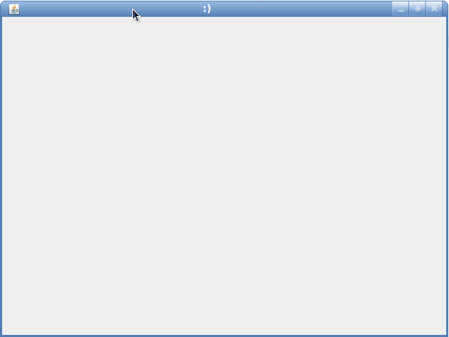
Luo luokka Piirtoalusta. Peri se Javan luokasta JPanel. Poista kommentit Main-luokan main()-metodista, siten, että luokkaa Piirtoalusta käytetään ikkunassa.
Projektin ajaminen näyttää samanlaisen ikkunan kuin aiemminkin.
Ylikirjoita luokan JPanel-metodi paint(). Metodi paint() piirtää paneelin sisällön. Muista kutsu super.paint() ylikirjoituksen alussa.
Lisää paint()-metodiin kutsu g.drawRect(20, 20, 50, 40), missä olio g on metodin paint() parametrina saava Graphics olio.
Aja projekti, ikkunan pitäisi nyt näyttää seuraavanlaiselta.
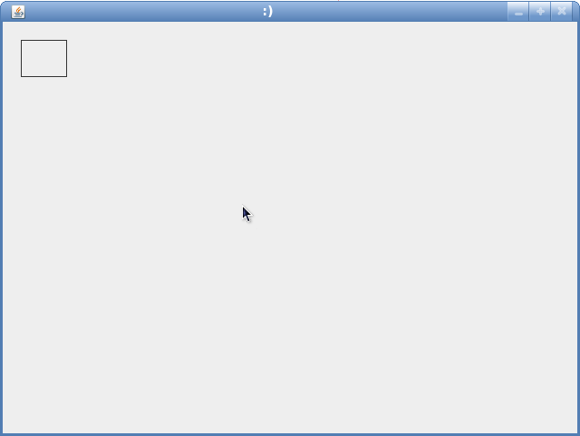
Metodin paint() parametrina saavalla Graphics-oliolla on paljon erilaisia metodeja. Etsi ympyrän piirtämiseen soveltuva metodi, ja piirrä ympyrä siten, että sen vasen yläkulma on kohdassa (320, 180), ja sen halkaisija on 100.
Aja projekti, ikkunan pitäisi nyt näyttää seuraavanlaiselta.
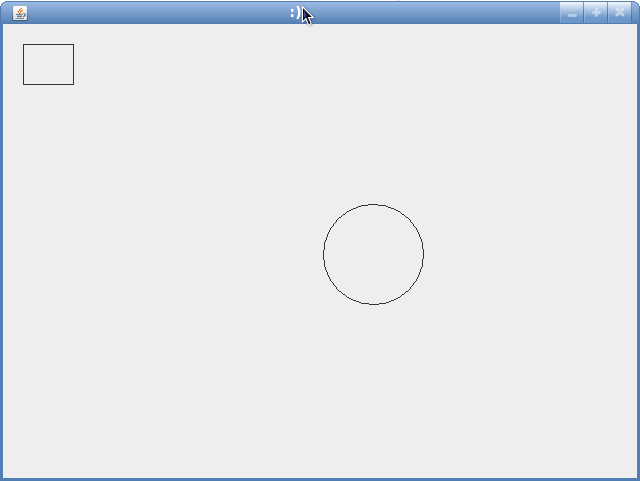
Lisää piirrettävään ikkunaan myös teksti "Moikka!" sopivaan sijaintiin. Tulostuksen tulee näyttää esimerkiksi seuraavanlaiselta.
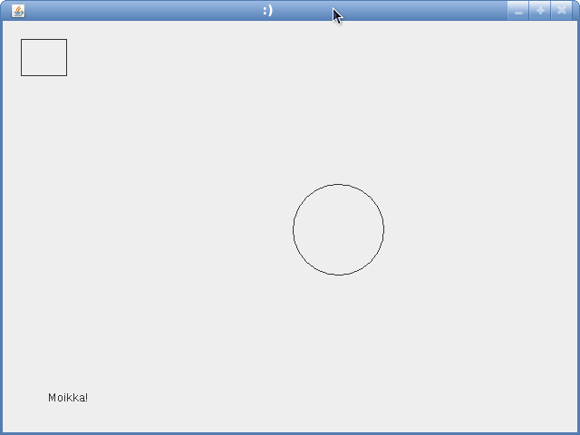
Lisää piirtoalustalle attribuutiksi ArrayList-olio nimeltä pisteet, joka sisältää Javan Point-olioita. Luo Piirtoalusta-luokalle konstruktori, joka saa parametrikseen ArrayList-olion pisteitä. Muuta metodia paint() siten, että ArrayList-olion sisältö piirretään myös piirrettäessä. Aseta jokaisen pisteen leveydeksi ja korkeudeksi 3.
ArrayList<Point> pisteet = new ArrayList<Point>(); pisteet.add(new Point(50, 200)); pisteet.add(new Point(175, 200)); pisteet.add(new Point(335, 350)); Piirtoalusta alusta = new Piirtoalusta(pisteet); // luodaan uusi ikkuna JDialog ikkuna = new JDialog(); ikkuna.setSize(640, 480); // asetetaan leveydeksi 640 pikseliä, korkeudeksi 480 pikseliä ikkuna.getContentPane().add(alusta); ikkuna.setDefaultCloseOperation(WindowConstants.DISPOSE_ON_CLOSE); // suljetaan ohjelma ikkunan sulkeutuessa ikkuna.setVisible(true); // näytä ikkuna
Tulostuksen pitäisi näyttää nyt seuraavalta.
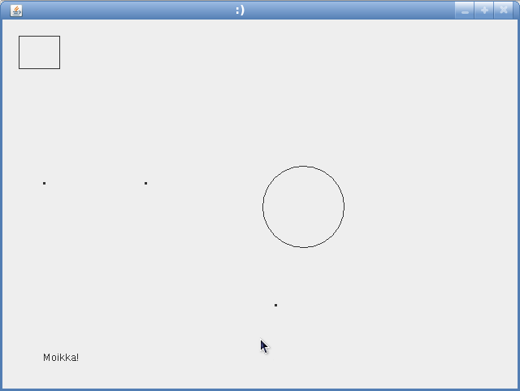
Lisää luokalle Piirtoalusta Javan valmis rajapinta MouseListener, joka tarjoaa pääsyn hiiren tapahtumiin. Muista lisätä myös Piirtoalusta-luokan konstruktoriin kutsu addMouseListener(), jolle annetaan kyseinen piirtoalusta.
Rajapinta MouseListener vaatii 5 erilaista metodia. Toteuta niistä vain mousePressed(), ja jätä muut tyhjiksi. Lisää mousePressed()-metodissa hiiren sijainti pisteet-listaan. Saat hiiren sijainnin parametrina mousePressed()-metodille tulevan MouseEvent-olion kautta. Lisää myös metodin loppuun kutsu repaint() yläluokalle JPanel. Repaint pyytää ikkunan uudelleenpiirtoa.
Aja ohjelma, sinun pitäisi pystyä lisäämään pisteitä hiirenpainalluksella. Tulostus voi olla esimerkiksi seuraavanlainen.
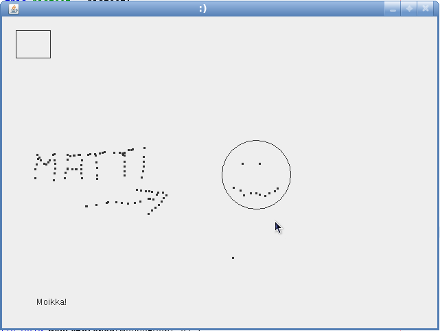
Luodaan pieni terraario-simulaattori. Terraariossamme on kasveja, kasvissyöjiä ja lihansyöjiä. Kasvit elelevät rauhakseen, kasvissyöjät liikkuvat ja etsivät kasveja, lihansyöjät taas pyrkivät syömään kasvissyöjiä.
Lue ensin tehtävä läpi kokonaisuudessaan, jotta saat kuvan toteutettavasta ohjelmasta. Huomaa että toteutuksesta on myös paljon jo annettu valmiina.
Luodessasi projektia luo sille myös ehdotettu Main-luokka. Käytä seuraavaa koodinpätkää Main-luokan main()-metodille.
Piirtoalusta alusta = new Piirtoalusta();
Terraario terraario = new Terraario(alusta);
alusta.setTerraario(terraario);
// luodaan uusi ikkuna
JDialog ikkuna = new JDialog();
ikkuna.setSize(640, 480); // asetetaan leveydeksi 640 pikseliä, korkeudeksi 480 pikseliä
ikkuna.getContentPane().add(alusta);
// suljetaan koko ohjelma ikkunaa suljettaessa.
ikkuna.addWindowListener(new WindowAdapter() {
public void windowClosing(WindowEvent e) {
System.exit(0);
}
});
ikkuna.setVisible(true); // näytä ikkuna
Käytetään seuraavaa luokkaa pohjana Terraario-toteutukselle.
public class Terraario {
private static final Random random = new Random();
// TODO: toteuta Elio-luokka
// HashSet on tietorakenne, jossa ei voi olla montaa viitettä
// samaan olioon. Käytetään HashSet-tietorakennetta tässä tehtävässä.
// private HashSet<Elio> eliot;
// private Piirtoalusta piirtoalusta;
public Terraario(Piirtoalusta piirtoalusta) {
// this.piirtoalusta = piirtoalusta;
// this.eliot = new HashSet<Elio>();
// luodaan 50 kasvia
for (int i = 0; i < 50; i++) {
// TODO: toteuta luokka Kasvi
// eliot.add(new Kasvi(random.nextInt(640), random.nextInt(480)));
}
// luodaan 10 kasvissyöjää
for (int i = 0; i < 10; i++) {
// TODO: toteuta luokka Kasvissyoja
// eliot.add(new Kasvissyoja(this, random.nextInt(640), random.nextInt(480)));
}
// luodaan 3 lihansyöjää
for (int i = 0; i < 3; i++) {
// TODO: toteuta luokka Lihansyoja
// eliot.add(new Lihansyoja(this, random.nextInt(640), random.nextInt(480)));
}
}
// HashSet toteuttaa rajapinnan Set, palautetaan vain rajapinta.
// public Set<Elio> getEliot() {
// return eliot;
// }
public void simuloi() {
// for (Elio elio : eliot) {
// if (elio.getElossa()) {
// elio.ela();
// }
// }
poistaKuolleet();
lisaanny();
// TODO: luo Kasvi-luokka
// eliot.add(new Kasvi(random.nextInt(640), random.nextInt(480)));
}
private void poistaKuolleet() {
// TODO: luokan sisäinen metodi poistaKuolleet();
}
private void lisaanny() {
// TODO: luokan sisäinen metodi lisaanny();
}
// avainsana synchronized kertoo metodin olevan synkronoitu,
// eli sitä voidaan kutsua vain yhdestä kohdasta kerrallaan.
// tämä sen takia että terraario käyttää samaa eliöt-listaa
// mitä käyttöliittymä piirtää.
public synchronized void piirra(Graphics g) {
// for (Elio elio : eliot) {
// elio.piirra(g);
// }
}
}
Luodaan kasveille, kasvissyöjille ja lihansyöjille yhteinen abstrakti yläluokka Elio. Peri Elio Javan valmiista luokasta Point, josta saamme tiedot sijainnin ilmaisemiseen. Eliöllä on attribuuttina int-tyyppinen koko, joka kertoo eliön koon, sekä boolean tyyppinen muuttuja elossa, joka kertoo onko eliö-olio elossa. Luokalla Elio on lisäksi seuraavat abstraktit metodit.
public abstract void piirra(Graphics g); public abstract void ela(); public abstract Elio lisaanny(); public abstract boolean onLihaisa(); public abstract boolean onVihertava();
Luo luokka Elio.
Luokka Kasvi perii luokan Elio. Kasvin alkukoko on 5, ja sen eläminen on lähinnä paikallaan olemista. Kasvin elellessä sen koko kasvaa yhdellä hyvin pienellä todennäköisyydellä (alle 1%).
Kasvi ei ole lihaisa, mutta se on vihertävä. Esitetään se vihreänä ympyränä, toteuta siis sen metodi piirra() siten, että piirtämisessä käytetään vihreää väriä. (Vinkki: Graphics-luokalla on metodi setColor(), jolla voidaan asettaa tyyppiä Color oleva piirtoväri.)
Luokan Kasvi konstruktori saa parametrina sen sijainnin x- ja y-koordinaatteina.
Käytetään viime tehtävässä luotua Piirtoalusta-luokkaa pohjana toteutukselle. Poista piirtoalustalta MouseListener-rajapinta, ja muuta sen toteutusta siten, että se sisältää Terraario-tyyppisen olion ArrayList-olion sijaan. Muuta myös paint()-metodia siten, että se kutsuu terraarion piirra()-metodia. Terraarion asetus piirtoalustalle kannattanee tehdä setterin avulla.
Ajaessasi ohjelman ikkunan pitäisi näyttää seuraavanlaiselta (kasvien sijainnit ovat satunnaisia!).
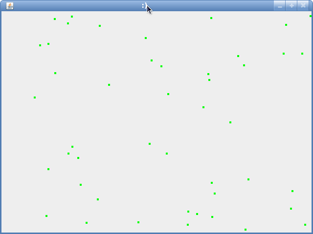
Tällä hetkellä terraariossamme ei ole juurikaan elämää. Lisätään mahdollisuus terraarion simulointiin. Javan valmis rajapinta Runnable mahdollistaa ohjelman käynnistämisen tietyllä hetkellä. Toteuta rajapinta Runnable luokalle Terraario.
Lisää rajapinnan vaatimaan metodiin run() kutsut simuloi() ja pyyntö uudelleenpiirrosta piirtoalustalle. Lisää run()-metodin loppuun seuraava lähdekoodipätkä, joka käskee ohjelmaa odottamaan 20 millisekuntia ennen jatkoa.
try {
Thread.sleep(20);
} catch (InterruptedException ex) {}
Lisää Main-luokan main()-metodin loppuun seuraava kutsu, joka aloittaa oman säikeen terraariolle.
new Thread(terraario).start();
Jos saat tästä eteenpäin poikkeuksen java.util.ConcurrentModificationException, älä välitä siitä. Emme ota tässä tehtävässä kantaa tietorakenteiden synkronointiin.
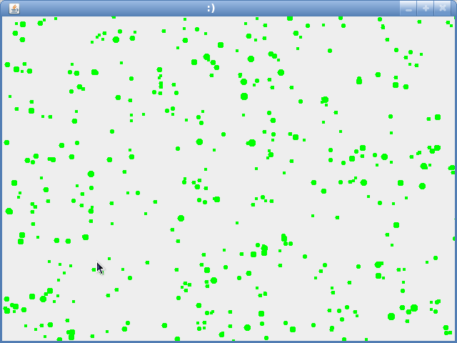
Peri luokka Kasvissyoja seuraavasta luokasta LiikkuvaElio.
public abstract class LiikkuvaElio extends Elio {
protected static final int ALKUKOKO = 8;
private int ika;
protected Elio kohde;
protected Terraario terraario;
public LiikkuvaElio(Terraario terraario) {
this.terraario = terraario;
this.ika = 0;
this.koko = ALKUKOKO;
}
public void ela() {
ika++;
if (ika > 500) {
this.koko--;
if(this.koko <= 1) {
setElossa(false);
return;
}
}
valitseKohde();
liiku();
syo();
}
protected abstract void valitseKohde();
protected void liiku() {
if (kohde == null) {
return;
}
if (kohde.x < this.x) {
this.x--;
} else if (kohde.x > this.x) {
this.x++;
}
if (kohde.y < this.y) {
this.y--;
} else if (kohde.y > this.y) {
this.y++;
}
}
private void syo() {
if (kohde == null || this.distance(kohde) > 5) {
return;
}
if (kohde.getElossa()) {
kohde.koko--;
this.koko++;
if(kohde.koko <= 1) {
kohde.setElossa(false);
}
}
}
public boolean onLihaisa() {
return true;
}
public boolean onVihertava() {
return false;
}
}
Toteuta luokalle Kasvissyoja metodit valitseKohde(), piirra() ja lisaanny().
Valitse jahdattava kohde siten, että se on lähin vihertävä elossa oleva eliö. Kasvissyojä saa konstruktorissaan Terraario-olion, sekä sijainnin x- ja y-koordinaatteina. Piirrä kasvissyöjä punaisena ympyränä.
Kasvissyoja lisääntyy jos sen koko on yli kaksinkertainen alkuperäisestä koosta. Tällöin sen koko puolittuu, ja luodaan uusi Kasvissyoja-olio.
Toteuta myös terraarion lisaanny()-metodi.
Ohjelma kasvissyöjien kanssa näyttää kutakuinkin seuraavanlaiselta.
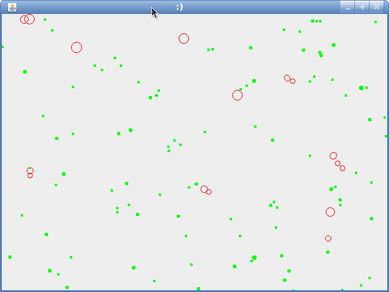
Luodaan vielä lihansyöjä suojelemaan kasvien oikeuksia. Lihansyöjät jahtaavat kasvissyöjiä, ja jättävät viherkasvit rauhaan. Peri luokka Lihansyoja myös ylläolevasta luokasta LiikkuvaElio.
Toteuta luokalle metodit valitseKohde(), piirra() ja lisaanny().
Valitse jahdattava kohde siten, että se on lähin lihaisa elossa oleva eliö. Lihansyoja saa konstruktorissaan Terraario-olion, sekä sijainnin x- ja y-koordinaatteina. Piirrä lihansyöjä sinisenä ympyränä. Lihansyöjä ei näe yli 200 pikselin päähän. Voit käyttää Point-luokan metodia distanceTo() etäisyyksien määrittelemiseen.
Lihansyöjä lisääntyy kuten kasvissyöjä, eli jos sen koko on yli kaksinkertainen alkuperäisestä koosta. Tällöin sen koko puolittuu, ja luodaan uusi Lihansyoja-olio.
Ylikirjoita lopuksi vielä metodi onLihaisa() siten, että se palautta aina false. Muutoin lihansyöjät eivät keskity kasvissyöjiin!
Ohjelma lihansyöjien kanssa näyttää kutakuinkin seuraavanlaiselta.
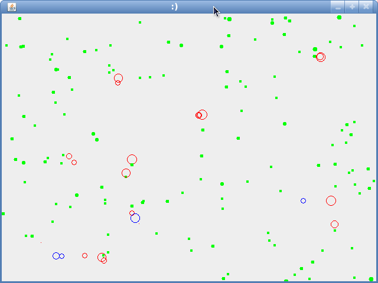